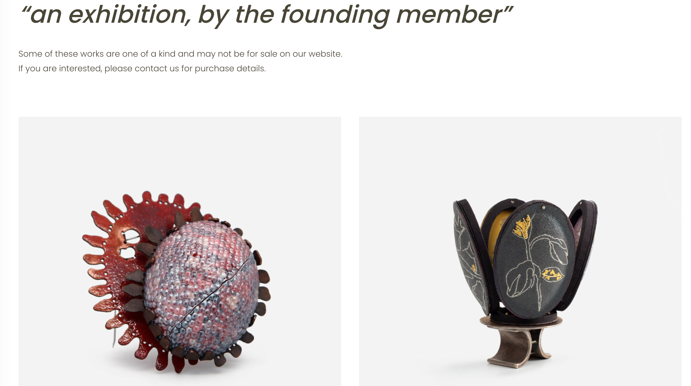
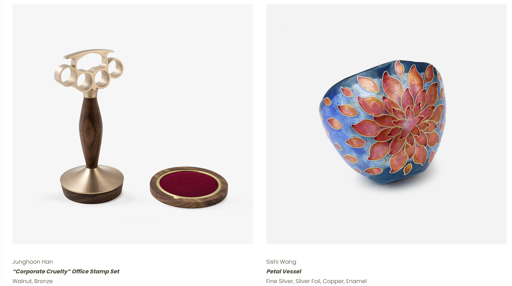
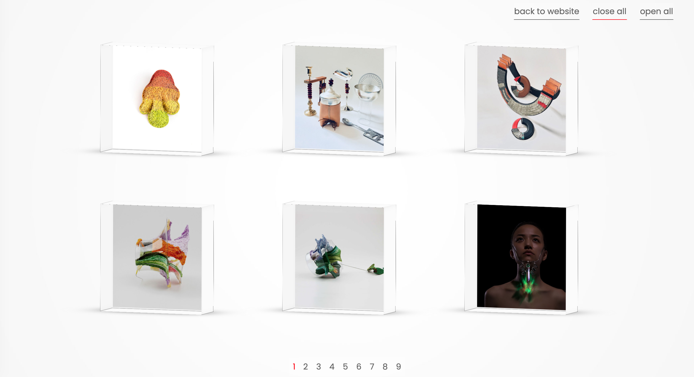
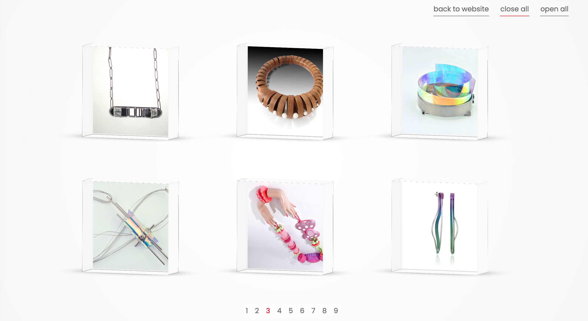
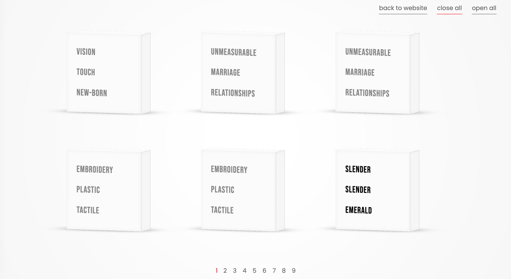
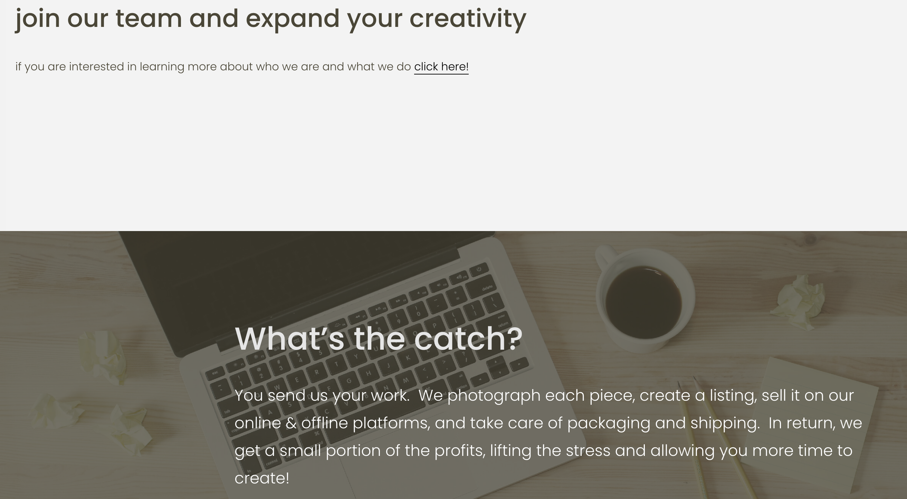

线上珠宝展竟是盲盒❗️❓| Splop Design 「艺术访谈」
欢迎来到木牙Make Unique Young Arts，让我们来探索珠宝设计与新锐线上珠宝平台～
随着网络的发展和时代的推进，2020年由于大部分时间无法外出的原因，艺术展览陆续开始尝试从线下转移和发展到线上。与线下展览不同，线上展览虽然不能提供场地和实体互动却减少了外出的必要。
With the development of the Internet and the advancement of The Times, art exhibitions have been trying to transfer and develop online in 2020 for the reason of isolation. Difference with the physical exhibition, online exhibition do not provide space, physical interaction and it reduce the limitation of distance.
足不出户就可以看到自己心仪的展览是现代都市快节奏的特殊产物，大大节省了人们外出的成本，时间紧迫和观展时间等一些更私人的问题。随时随地可以无限次欣赏展览作品以及即时回看艺术作品简介等愿望也得到了充分的满足。因为工作日，时间对不上，无法出国，等遗憾错过展览的情况将不会出现。
You can see your favorite exhibition without leaving your home, which is a special and modern existence in nowadays. It is greatly saving people's budgets for going out, time consuming, reviewing time and other more personal issues. The desire of having unlimited access, time and space to the exhibition works has been fully satisfied. Because of the working day, hard catch the opening time or couldn't go abroad, such as regret to miss the exhibition will not occur.
对比起图像，绘画等2D作品。3D作品线上展览会更加的具有挑战性。因此比起解决无法展示3D立体效果呈现这一问题，一些线上展览平台更集中在为观展群众提供更加趣味性的线上互动式体验。怀着对于线上展览的好奇和3D作品如何在线上呈现以及发展等问题。
我们今天有幸邀请到了 Splop Design 线上珠宝平台来分享他们建立平台的初衷～一起来倾听他们在创建平台时遇到的趣事吧！
Compare with the online exhibition of images, paintings and other 2D works, 3D works are more challenging. Therefore, rather than solve the problem of unable to display 3D three-dimensional effects, some online exhibitions focus on providing interesting interactive online experiences for the audience. With curiosity about online exhibitions and questions about how 3D works are presented and developed online.
We are honored to have Splop Design team to share their stories of building the online jewelery platform. Let's see the interesting things they encountered while setting up the platform.
赵英琪，当代珠宝设计师，教育者，GIA应用珠宝家。她于印第安纳大学布鲁明顿分校获得金属加工及珠宝设计硕士学位，并于伊利诺伊大学厄巴纳-香槟分校获得金属加工学士学位。
Yingqi Puffy Zhao is a contemporary jeweler, educator, and GIA Accredited Jewelry Professional. She holds an MFA in Studio Art with a concentration in Metalsmithing and Jewelry Design from Indiana University Bloomington, and a BFA in Crafts with a concentration in Metals from the University of Illinois at Urbana-Champaign.
关亦辰来自中国北京。她在作品中融合了珐琅与3D打印物件，并以此表达她对轮回这一主题的层层认知。
Kerry Yichen Guan is from Beijing, China. Her work involves intricate harmony between enamel and 3D printed objects that serve as a frame to each chapter of her own perception of reincarnation.
韩政训，艺术家，设计师，来自韩国首尔。他的主要研究方向为，通过手作物件营造更加使人愉悦的工作环境进而提高工作者的效率。
Junghoon Han is an artist and designer based in Seoul, South Korea. The main goal of his research is to improve the productivity of workers by offering a more pleasant work environment.


Splop Design旨在展示以及售卖代表着珠宝设计及金属加工领域新声音的手作可穿戴作品。
Splop Design features and sells handcrafted wearable art and jewelry created by upcoming emerging artists of today.

思无所缚
Think with no box in mind.


➤ 木牙MUYA: Splop Design 平台与其他的珠宝平台有哪些标新立异的地方? 新平台这个新具体体现在哪些方面?
What are the differences between the Splop Design platform and other jewelry platforms? What are the specific aspects of this new platform?
Splop Design: Splop Design 线上店铺旨在展示以及售卖代表着珠宝设计及金属加工领域新声音的手作作品。我们为不断探索，推敲，和构筑材料与制作工艺之间的联系的艺术家们提供展示个人作品的机会。我们非常幸运地可以和一群在各自的领域发光的，属于未来的艺术家小伙伴们合作。Splop Design的入驻设计师群体由在校生，近期毕业生，还有热爱可穿戴艺术的自学者组成。平台为设计师提供展示及售卖作品的机会，让设计师有更多的时间和精力可以专注于自己的创作。Splop Design是一个由主创人员和入驻设计师组成的团队，也是创作者与顾客这一网络里独特的一环。
Splop Design is an online store selling handcrafted jewelry that is made by emerging artists from around the world. We represent artists who demonstrate the utmost respect for the materials and techniques employed in their work. We are fortunate to represent and work with a diverse group of newly graduated and upcoming artists who exemplify expertise in their field. Splop Design artists are students, recent graduates, and self-taught learners who are seeking exposure, profit, and to focus on their making not marketing. Our platform holds a unique position and opportunity in the art world. Splop Design is a community of upcoming artists thriving off of the innovative interweb gallery exposure, reaching international gallerists, buyers and collectors.
➤ 木牙MUYA: 从建立平台概念到实际办展具体经历了了哪几个步骤? 哪一步觉得是最困难的? 哪一步又是最至关重要的呢?
What are the specific steps from the establishment of the concept to the actual holding of the exhibition? Which step is the most difficult? Which step is the most important?
Splop Design: 在完成网站店铺以及入驻设计师界面的设计之后，我们开始讨论和探索能够向大众展示来自世界各地艺术家的手制作品的更多形式和可能性。在新冠疫情期间，很多线下展览受到影响，美术馆也无法正常开放。我们希望能以线上虚拟展览的形式，让大家可以随时随地观展，这一期许驱使我们创作了“Newfangled”展览。这一过程中最困难的一环是改变我们的视角。从学生时代开始，我们一直是站在展览申请者的角度去看待展览，而这次办展的过程是我们第一次有了机会能以创办者的角度去构思并搭建一个展览。同时，这个最困难的环节也是最至关重要的一环。我们需要思考并推衍一个展览从一缕思绪到完整成形的全过程，以对我们的观众负责。
After we built our website that hosted a shop section and a featured artists section, we pondered over what we could do to help promote contemporary jewelry crafted by artists from around the world. We created Splop Design during the Covid-19 pandemic, a time where people were prohibited from visiting galleries and shows. We decided that it was time for us to hold a juried virtual exhibition, which later on became “Newfangled”. The most difficult part would be changing our perspectives. We had always been on the applicant’s side of an exhibition, and this was our very first time being on the creator’s side. At the same time, this most difficult part was indeed the most important part, since we needed to envision an exhibition from a seed to an evolved form in order to be responsible for our audience.
➤ 木牙MUYA: 作为平台主理人的同时也是学生, 在上学期间是如何克服课业的困难, 同时经营平台的呢?三人之间的工作是如何进行分割的呢? 对于时间上是如何进行调整和安排的呢?
As the manager of the platform and also as a student, how did you overcome and balance the difficulties in schoolwork and manage the platform at the same time? How is the job and role in your team? How to adjust and arrange the time?
Splop Design: 我们每一天都在面对新的挑战。在这些挑战之中，时间管理确实是一个棘手的课题。在运营Splop Design平台之余，团队的每位成员都要面对各自生活中的大小问题。我们所有人都尽全力地去为其他队员着想，每个人也都心照不宣地在队友需要帮助的时候予以理解和分担。所以我们大家其实并没有非常严格地分割所有的工作；我们践行着彼此之间相互学习的理念，不断地提高个人能力从而带领团队前进。
We face new challenges on a daily basis. Among all these challenges, time management is certainly a quite tricky task. Apart from operating the Splop Design platform, we all have various tasks demanding our attention so as to survive the daily mundane. We all try our best to be considerate of one another, and we are always prepared to help out when anyone on the team needs assistance. With that said, we do not necessarily have harsh divisions of Splop Design related tasks; instead, we learn from one another so that we are all prepared to fill in on a task when needed.


➤ 木牙MUYA: Splop Design 平台作为新平台是如何推广和宣传自己的平台的呢? 对于未来平台的发展有哪些规划和期望?
As a new platform, how does the Splop Design platform promote and publicize your own platform? What are the plans and expectations for the future development of Splop Design?
Splop Design: Splop Design成立于2020年的五月，通过Instagram, Facebook, Pinterest等社交媒体平台宣传和推广我们的平台理念。同时，就像这次与木牙的对话一样，我们也在寻找能够让更多人看到Splop Design的访谈机会。我们也以邮件及明信片的形式向世界各地的教育机构推广我们的展览讯息，设计师入驻平台的机会，和线上展览。未来我们也将推出平台的第二个线上评审展览，也希望会有越来越多的创作者们加入到Splop Design团体之中。
Splop Design is founded in May 2020, and we are promoting our vision through numerous social media platforms including Instagram, Facebook, Pinterest, and more. We search for interview opportunities like this conversation with MUYA, and we reach out to educational programs from around the world via emails and postcards to promote our calls for entry, featured artist opportunities, and exhibitions. In the near future, we plan to hold our second juried virtual exhibition and welcome more and more creators to join the Splop Design community.
➤ 木牙MUYA: 在作品展览的选取上, Splop Design 希望收录什么样的作品呢? 有什么主题或者核心概念?
In the selection of works for exhibition, what kind of works does Splop Design want to feature? What are the themes or core concepts?
Splop Design: 为了能够展示更多风格各异的独特作品，Splop Design的每个虚拟评审展览会有不同的特定主题。现在已经上线的“Newfangled”展览的主题为，展示新生艺术家的当代可穿戴作品，并侧重于珠宝设计及金属加工领域的创新。在评审展展出作品的选择方面，受邀的评审们拥有决策权。每位评审的评判方式会有所不同，但在这次“Newfangled”展览的作品选择过程中，评审们选出了他们认为更加符合本次展览主题的作品。
Splop Design’s juried virtual exhibitions are created based on different themes each time, so as to be able to present an extensive collection of unique works. For our current exhibition that is titled as “Newfangled”, we define it as “an online exhibition presenting contemporary wearable work by emerging artists, with an emphasis on the innovations in the Jewelry Design and Metalsmithing field”. The selection of works is solely based on decisions made by the jurors invited. Each juror will think in a different way, but for this "Newfangled" exhibition, our jurors wanted to choose works that they thought would best fit into the prompt we created for this show.


➤ 木牙MUYA: 线上和线下展览, Splop Design 团队觉得在展示策划上会有哪些不同和差异?
In terms of both online and physical exhibitions, what differences in Splop Design exhibition planning?
Splop Design: 线下展览通过现场的布局以及让观众可以在场馆中行走的方式，为观者提供具有“互动性的”和“浸入式的”体验。与之对比，线上展览因为虚拟的呈现方式，无法为观者提供一个在现实生活中真切存在的空间。但是这种虚拟的视角也可以通过其他的方式为观众带来有趣的体验。为了创造出具有互动性的和浸入式的体验，我们以盲盒为概念制作了“Newfangled”展览。我们邀请艺术家们为每件参展作品提供三个单词，以此作为描绘每个盲盒的提示。
Physical exhibitions can offer “interactive” and “immersed” experiences for the viewers, with the viewer walking in the exhibition site while observing the works in person. On the other hand, online exhibitions cannot provide a physical and tangible space for the viewers, due to the limitations of the digital format. Though, the digital perspective may lead to interesting results when experimented with. In order to create an interactive and immersed experience for the audience, we planned to exhibit “Newfangled” in a blind box format. We gathered three words that would best describe each piece from the makers, and used these words as visual clues that went on each blind box.

➤ 木牙MUYA: Splop Design 团队对于团队合作这件事是如何理解的呢? 平时与异国合伙人之间的工作讨论或意⻅不同时是如何处理的?有什么私心的解决方式吗? 合伙人之间如何发挥所长?
How does the Splop Design team think about the team work? How did you deal with the situation when you hold different ideas with foreign partners during the work discussion or ideas expression? Do you have any solution for balance this issue? How let each of partner develop their speciality?
Splop Design: Splop Design团队代表着Splop Design本身，Splop Design也代表着Splop Design团队。我们会有意见相左的时候，但我们一定会把自己的想法分享给其他成员，然后共同做出决策。我们会一起探索，一起创作，一起成长。面对挑战的时候，我们会和我们的设计师们，顾客们，还有团队里的每一个人站在一起。我们信任每一位队员，并予以大家发挥自己所长的空间。这种相互间的信任和共同的热爱让我们能够不停向前，不断造梦。
Splop Design is represented by our team, and our team is represented by Splop Design. We may have drastically different opinions, but we always share our thoughts with one another, then arrive at a unified plan. We brainstorm as a team, create as a team, and grow as a team. We work through all challenges by standing together with our artists, our customers, and our community. We trust each other to perform what we are best at. It is the communal trust and enthusiasm that push us to go further and dream bigger.
✯ Which inspire Splop Design most ✯
“Splop Design，为你而制。”
“Splop Design，one of the kind for you.”

✤ Splop Design网站（Splop Design Website)
✤ Splop Design邮箱（Contact Email)：splopdesign@gmail.com
✤ INS(instagram): Splop Design
木牙微信订阅号